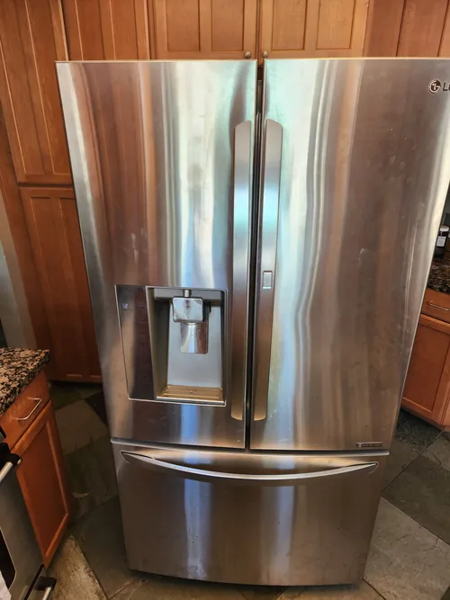

LG Refrigerator Repair: How Preventive Maintenance Can Extend Refrigerator Lifespan
Many homeowners think about refrigerator maintenance only after a problem develops. Unfortunately, waiting until cooling performance declines or a major component fails can lead to expensive repairs, food spoilage, and unnecessary stress. Preventive maintenance plays an important role in helping modern refrigerators operate efficiently while reducing the risk of unexpected breakdowns. Regular inspections, cleaning, and early diagnostics can significantly improve refrigerator reliability and extend appliance lifespan.
Modern LG refrigerators are sophisticated appliances that combine advanced cooling systems, inverter compressors, electronic controls, temperature sensors, evaporator fans, and smart technology designed to provide consistent food preservation. While these systems are built for long term performance, they still require routine care to operate at their best. Even small maintenance tasks can have a meaningful impact on cooling efficiency and overall appliance health.
One of the most important maintenance procedures involves cleaning condenser coils. Over time, dust, pet hair, grease, and household debris accumulate around the coils, reducing their ability to release heat efficiently. When condenser coils become dirty, the compressor must work harder and run longer to maintain proper temperatures. Increased compressor workload can lead to higher energy consumption and unnecessary wear on critical cooling components. Regular cleaning helps improve efficiency and supports long term compressor performance.

Door gaskets are another frequently overlooked component. Refrigerator door seals help maintain stable internal temperatures by preventing warm air from entering the appliance. Damaged, cracked, or worn gaskets can allow air leaks that force cooling systems to operate continuously. This additional workload may increase energy costs, create temperature fluctuations, and accelerate wear on internal components. During professional LG refrigerator repair service, technicians often inspect door gaskets to verify proper sealing and identify potential airflow issues.
Water filtration systems also require periodic attention. Many LG refrigerators include water dispensers and ice makers that depend on adequate water pressure and clean filtration. Over time, water filters can become restricted, reducing flow and affecting ice production. Replacing filters according to manufacturer recommendations helps maintain proper system performance and supports reliable operation of water related components.
Monitoring refrigerator temperatures can provide valuable insight into developing problems. Many cooling system issues begin gradually and may not be immediately obvious. A refrigerator that occasionally struggles to maintain temperature, freezes food unexpectedly, or develops excess moisture may already be showing early signs of airflow restrictions, sensor failures, evaporator problems, or compressor related issues. Early diagnostics often allow technicians to address problems before major repairs become necessary. Preventive maintenance also helps identify small issues before they create larger failures.
Loose electrical connections, failing fan motors, partially restricted drain systems, worn components, and minor electronic problems can often be detected during routine inspections. Addressing these conditions early helps improve appliance reliability and may reduce the likelihood of costly emergency repairs in the future.
Ice maker systems benefit from maintenance as well. Water supply lines, inlet valves, filters, and dispensing components can all experience wear over time. Routine inspections help ensure proper operation and may prevent common problems such as slow ice production, water leaks, frozen fill tubes, and dispenser malfunctions. Because many refrigerator systems are interconnected, addressing small water system issues can also help protect surrounding components.
Modern smart refrigerators rely heavily on electronic communication between sensors, control boards, and cooling systems. Software controlled functions, digital displays, and advanced monitoring systems improve convenience but also require accurate diagnostics when performance changes occur. Professional LG refrigerator repair technicians use specialized testing procedures to evaluate these systems and identify developing issues before they affect overall refrigerator operation.
Many homeowners are surprised to learn that preventive maintenance can also improve energy efficiency. Refrigerators that operate with clean coils, proper airflow, functioning fans, and stable temperatures generally consume less energy than appliances struggling with hidden performance problems. Improved efficiency not only lowers utility costs but also reduces stress on critical refrigerator components.
Professional LG refrigerator repair is not only about fixing broken appliances. It is also about helping homeowners protect their investment through proper maintenance, early diagnostics, and long term performance strategies. Regular maintenance helps reduce the risk of unexpected breakdowns, supports consistent cooling performance, and contributes to a longer appliance lifespan.
Whether your refrigerator is a newer smart appliance or an older LG model, preventive maintenance remains one of the most effective ways to improve reliability and reduce future repair costs. Investing in routine care today can help keep your refrigerator operating efficiently and dependably for many years to come.